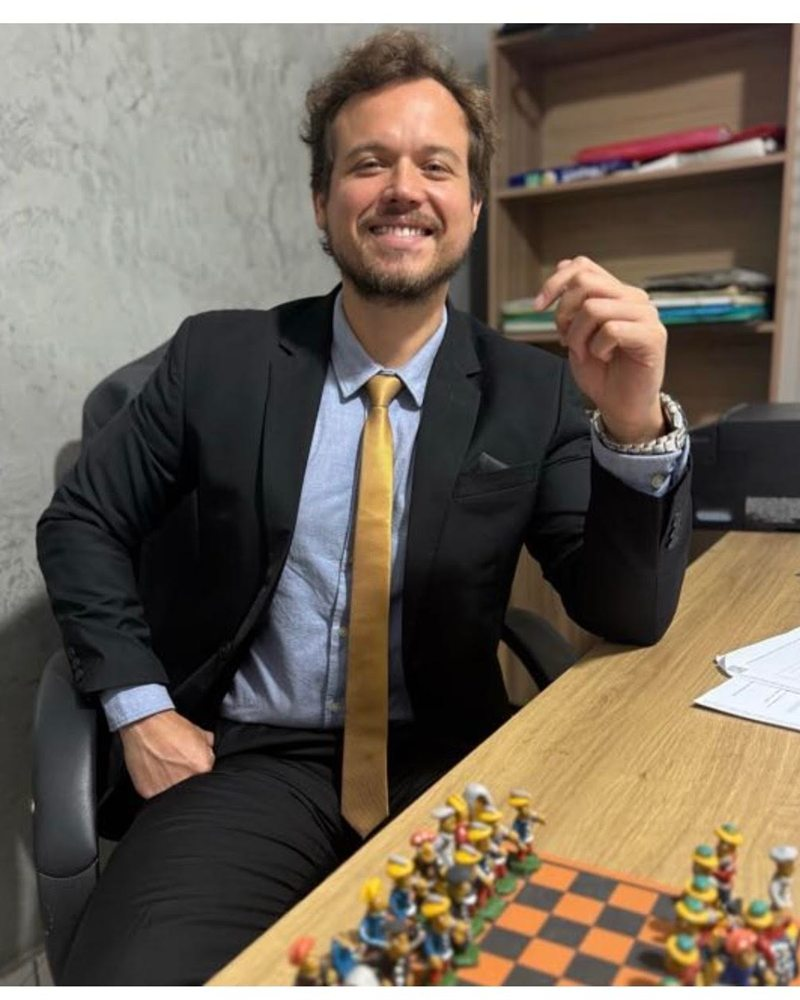

Você vê o resultado
Caminho provável, viabilidade indicada, passo a passo e documentos. Tudo na tela, sem cadastro.
Um jogo de perguntas simples que mostra o caminho jurídico provável, a viabilidade indicada e o passo a passo — do primeiro documento até o registro.

Caminho provável, viabilidade indicada, passo a passo e documentos. Tudo na tela, sem cadastro.
Com um toque, o resultado vai pronto para o WhatsApp do advogado — você não precisa explicar tudo de novo.
O jogo indica. Quem confirma é a análise dos documentos — é ela que define o caminho de verdade.
O resultado do jogo é uma orientação inicial, não um parecer e nem promessa de resultado.